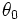
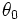
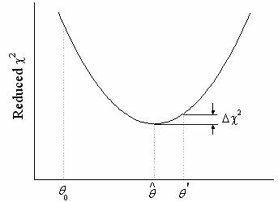
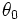
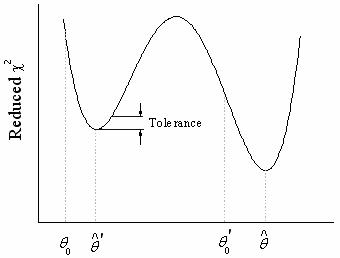
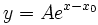
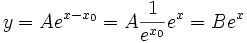
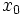
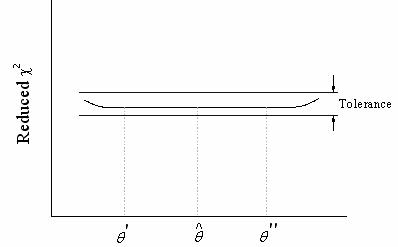

während eines Anpassungsvorgangs an. Von einem Startwert  ausgehend, wird der Parameterwert so angepasst, dass der -Wert reduziert wird. Der Fit hat konvergiert, wenn ? ? Toleranz
während eines Anpassungsvorgangs an. Von einem Startwert  ausgehend, wird der Parameterwert so angepasst, dass der -Wert reduziert wird. Der Fit hat konvergiert, wenn ? ? ToleranzDer nichtlineare Anpassungsprozess ist iterativ. Der Prozess ist abgeschlossen, wenn der Unterschied zwischen reduzierten Chi-Quadratwerten von zwei aufeinanderfolgenden Iterationen kleiner ist als ein bestimmter Toleranzwert. Wenn der Prozess abgeschlossen ist, wird gesagt, dass die Anpassung konvergiert ist. Zur Darstellung wird ein Modell mit einem Parameter verwendet:

Die Kurve zeigt eine Änderung des reduzierten während eines Anpassungsvorgangs an. Von einem Startwert  ausgehend, wird der Parameterwert so angepasst, dass der -Wert reduziert wird. Der Fit hat konvergiert, wenn ? ? Toleranz
Das Ziel der nichtlinearen Kurvenanpassung ist es, das absolute Minimum des reduzierten zu finden. Manchmal erreicht der Minimierungsvorgang jedoch nicht dieses absolute Minimum (die Anpassung konvergiert nicht). Wenn das Konvergieren fehlschlägt, ist das häufig auf einen der folgenden Gründe zurückzuführen:
Inhalt |
Initialisierungswerte sind für einen Anpassungsvorgang sehr wichtig. Sie können empirische Werte aus vorangehenden Arbeiten sein oder geschätzte Werte, die durch Umformen der Formel in eine annähernde Form abgeleitet wurden. Gute Initialisierungswerte verkürzen die Zeit zum Ausführen der Anpassung.
Es ist nicht ungewöhnlich, dass mit dem iterativen Verfahren eher ein relatives als ein absolutes Minimum gefunden wird. In diesem Fall konvergiert der Vorgang so, dass eine weitere Verminderung des reduzierten unmöglich erscheint.

Das größte Problem besteht darin, dass man nicht einmal weiß, ob die Routine ein absolutes oder ein relatives Minimum erreicht hat. Die einzige Möglichkeit sicherzugehen, dass der iterative Vorgang ein absolutes Minimum erreicht, ist die Anpassung von mehreren verschiedenen Initialisierungsparameterwerten und die Beobachtung dieser Ergebnisse. Wenn Sie wiederholt das gleiche Endergebnis erhalten, ist es unwahrscheinlich, dass ein lokales Minimum gefunden wurde.
Das häufigste Problem bei der nichtlinearen Anpassung ist, dass egal, wie Sie die Parameterinitialisierungswerte wählen, die Iterationen nicht zu konvergieren scheinen. Einige oder alle Parameterwerte ändern sich mit den Iterationen ständig und divergieren schließlich oder produzieren arithmetischen Über-/Unterlauf. Dies sollte ein Zeichen für Sie sein, bezüglich der Anpassungsfunktion und/oder den von Ihnen verwendeten Daten etwas zu unternehmen. Es gibt einfach keinen einzelnen Satz von Parameterwerten, der Ihren Daten am besten angepasst ist.
Haben die Funktionsparameter im Bezug auf die unabhängigen Variablen das gleiche Differential, lässt dies vermuten, dass die Funktion überparametrisiert ist. In solchen Fällen konvergiert der Anpassungsvorgang nicht. Im folgenden Modell zum Beispiel:

A ist die Amplitude und x0 die horizontale Verschiebung. Sie können die Funktion auch wie folgt neu schreiben:

Mit anderen Worten, wenn sich während der Anpassung die Werte für A und  ändern, so dass die Kombination B erhalten bleibt, wird sich der reduzierte -Wert nicht ändern. Jeder weitere Versuch, die Anpassung zu verbessern, ist wahrscheinlich nicht erfolgreich.

Tritt eines der beiden folgenden Szenarien auf, deutet dies darauf hin, dass etwas nicht stimmt:
Beachten Sie jedoch, dass die Überparametrisierung nicht unbedingt bedeutet, dass die Parameter in dem Modell keinen physikalische Bedeutung haben. Es ist möglicherweise ein Hinweis darauf, dass es unbegrenzte Lösungen gibt und Sie Bedingungen für den Anpassungsprozess bestimmen sollten.
Selbst wenn die Funktion theoretisch nicht überparametrisiert ist, kann sich der Iterationsvorgang so verhalten, als wenn sie es wäre, da die Daten nicht genug Informationen zur Bestimmung einiger oder aller Parameter beinhalten. Dies passiert normalerweise, wenn die Daten nur in begrenzten Intervallen der unabhängigen Variable(n) vorhanden sind. Wenn Sie zum Beispiel eine nicht monotonische Funktion wie Gaußsche an monotonische Daten anpassen, hat der nichtlineare Fitter Schwierigkeiten, die Immpulsmitte und -breite zu bestimmen, da die Daten nur eine Seite des Gaußschen Impulses beschreiben können.